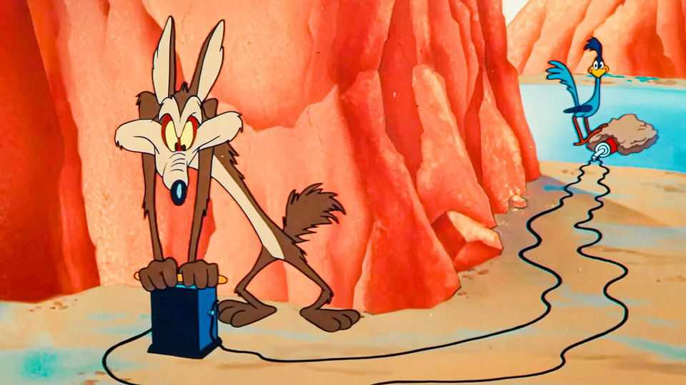

The resonance of Wile E. Coyote, from loony to loved
In “Coyote v Acme” the underdog has a new foe: corporate America

Aug 27th 2026
Wile E. Coyote, a cartoon character from Looney Tunes, is not as wily as he sounds. Since his debut in cinemas in 1949, he has tried but failed to catch the Road Runner. The calamitous canine is based on Mark Twain’s description of the coyotes he observed in the American West: “always poor, out of luck and friendless” and “always hungry”. Across about 50 cartoons, he uses skateboards, slingshots and even snow machines in his attempts to catch the bird in the desert. He buys strange gadgets, such as dehydrated boulders, from Acme, a comically bad corporation, which malfunction or explode. “Beep, beep!” the Road Runner always gloats before buzzing off.
Anyone who likes to root for the underdog will be happy to see him back on screens in “Coyote v Acme”, which opens in cinemas on August 28th. In this wacky, often amusing film, Coyote is not merely a hapless hunter. He is also a plucky plaintiff, suing Acme for its faulty products. With the help of his lawyers and a whistleblower (Bugs Bunny), as well as other characters from Looney Tunes, Coyote raises awareness of cartoon injuries and is celebrated as a hero. (The screenwriters based the film on a humour piece in the New Yorker and took inspiration from legal dramas such as “Erin Brockovich”.)
Though Coyote has never caught the Road Runner, he has captured the hearts of viewers. That is perhaps surprising: Chuck Jones, his creator, insisted that Coyote should be a “fanatic” and fail because of his own “ineptitude”. Jones thought he was a tragic figure, nearly naming him Don Coyote after Miguel de Cervantes’s hapless knight. Yet Jones also wanted audiences to side with the canine. He saw Coyote as Sisyphus: an absurd hero, showing joy and hope in the never-ending struggle of pushing a boulder uphill (or chasing a bird). “Coyote v Acme” offers plenty of nods to the myth, with its central mystery dubbed “Project Sisyphus”.
Getting the film into cinemas also became an uphill struggle. In 2023, after “Coyote v Acme” was completed, Warner Bros Discovery shelved it for a tax write-off. People posted online with the hashtag #SaveCoyoteVsAcme; one fan dressed up as Coyote and stood outside the Warner Bros studios with a sign saying “RELEASE ME!!!” All this generated buzz for the film, which was eventually acquired by a small distributor, Ketchup Entertainment.
Coyote has become famous partly because of the simple conceit that animates his life on screen. Though each of the cartoons has a distinctive title, the plots are similar: in “To Beep or Not to Beep”, Coyote gets hit by boulders and falls from the sky; in “War and Pieces” the same thing happens but with rockets.
In addition to gags, Coyote and the Road Runner provide a generational pulse-taking. Should one cheer for the blundering Coyote or the clever beeping bird that keeps evading his traps? In 2000 Henry Allen, a journalist and lecturer, argued that baby boomers who came of age in the raucous 1960s identified with the Road Runner. To them Coyote was the establishment (“cops, parents, the draft board”); they felt that the Road Runner thought outside the box. However, Mr Allen’s Gen X students identified with Coyote. They believed boomers (and the bird) had it too easy. Coyote worked hard, always against the odds.
Today people are Coyote fans for different reasons. His willingness to fight a corporation resonates at a time when big business is as unpopular as a massive boulder to the head. And his never-ending struggle with various gadgets reflects people’s own tech troubles. (Online memes compare Coyote’s anger at Acme products to the rage people feel when interacting with ineffectual customer-service AIs.)
All this makes Coyote’s determination seem less unhinged than upbeat. He may be a loony animal risking death for a bird, which doesn’t seem to have much meat on it anyway. But he is also enthusiastic and hopeful in the face of failure. “Not all underdogs are dogs,” reads the film’s marketing slogan. Some are coyotes; others are screenwriters and viewers, who all need something to laugh about. ■